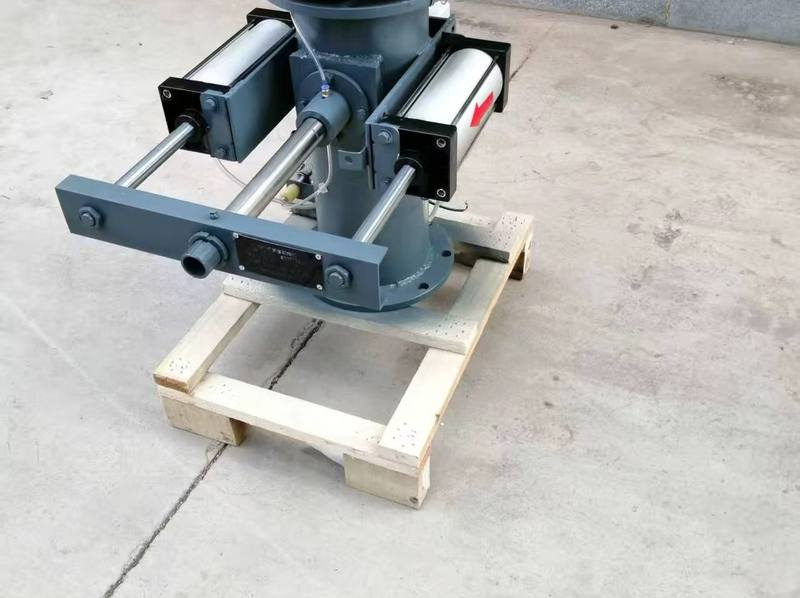
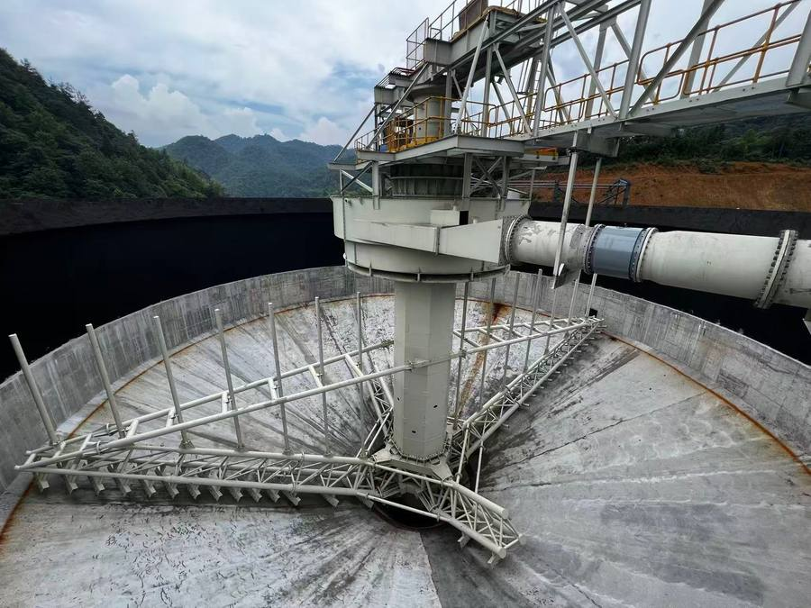
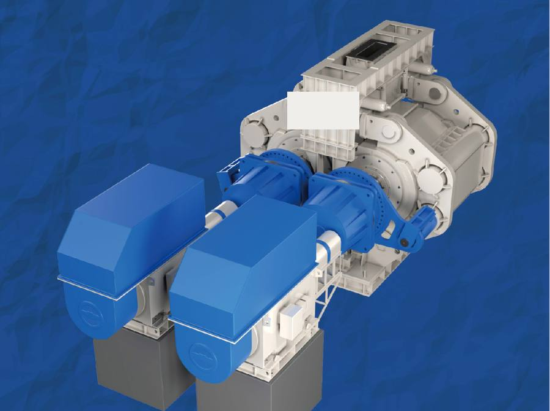
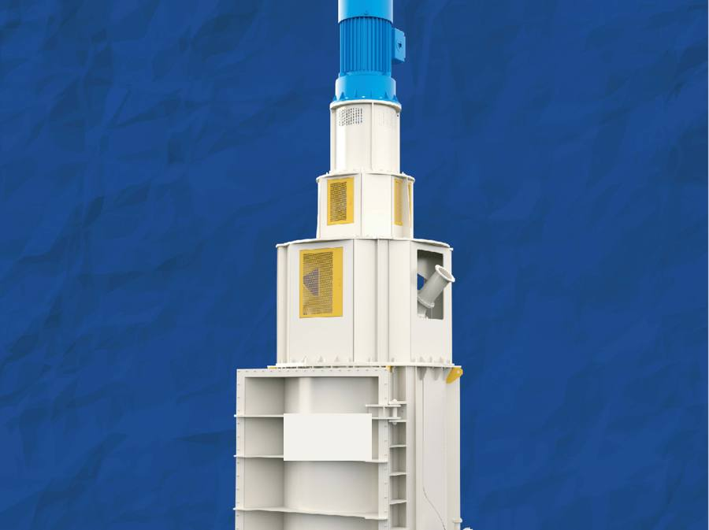
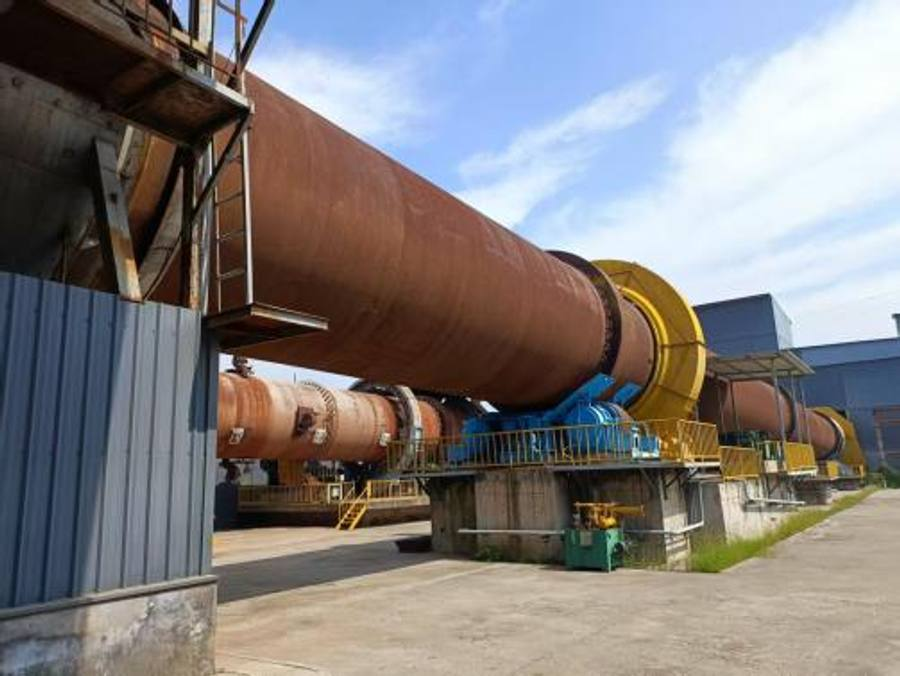
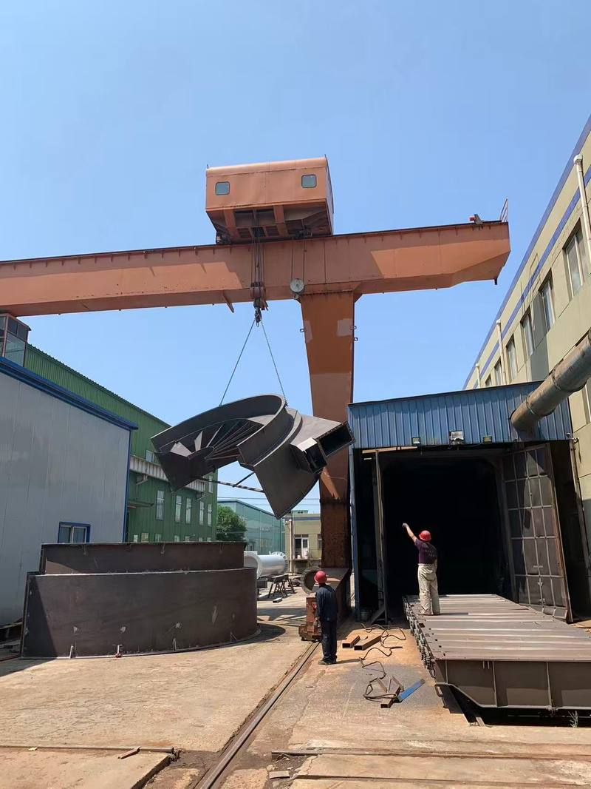
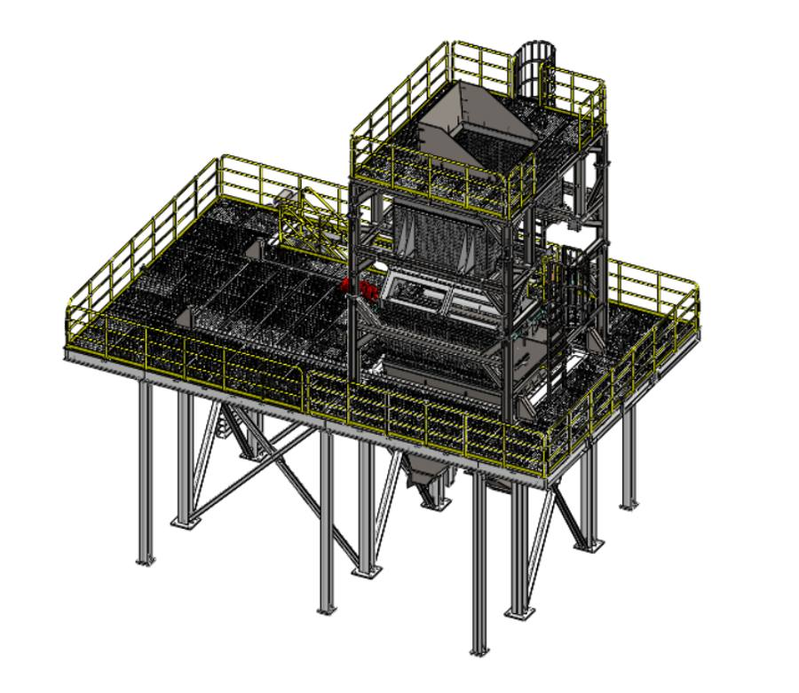

NORDTEC runs your ore through bench tests, 1–5 t/h pilot lines and full-scale thickeners, separators and roasting systems — the same engineering team from first test to final plant. Our lab and pilot fleet has operated for leading international laboratories, a national key laboratory in China, and mine sites in Zambia. Every quotation is backed by test data, not catalogue curves.
Single lab machines ship in weeks — no plant project required. RXGD slurry sampler — ships in days →
The same lab and pilot fleet we use for in-house testing is available as standalone equipment: single machines for bench verification, 1–5 t/h modular pilot lines for bankable process data. Skid-mounted, shipped worldwide, installed in days. Fleet references: leading international mineral laboratories (ALS, BV), a national deep-mining key laboratory, and mine sites in Zambia.

Know what is actually in your pipes — automatic sampling, around the clock, on any concentrator.
Get one without a plant project: send us your pipe diameter and slurry properties on WhatsApp or email — quotation in one business day.
Jaw + cone + roll crushing, swing screen, magnetic separation at 4,000–12,000 Gauss, dedusting — with belt/elevator auxiliaries on a modular steel platform. For lithium ores, REE and hematite verification. Delivered turnkey for a leading international laboratory group.
Jaw + cone + HPGR followed by balanced, fine and ultra-fine dry separators at 900–4,000 Gauss, with dedusting. Dry grinding–dry separation verification for magnetite and mixed iron ores.
Pulping unit, modular deep-cone thickener (Ø0.8–1 m × 5–10 m), slurry circulation loop, water treatment and full dosing set. Dry-stack and backfill verification for every tailings type — operating at a national deep-mining key laboratory.
Φ1.0 × 10 m integrated kiln with feeding, drying, electromagnetic heating, dedusting, cooling and three-stage dry separation. Handles feed at 20%+ moisture — Ta/Nb–ilmenite upgraded from ~25% to ~50% concentrate.
Crushing, rod milling, iron removal and 7 magnetic separators on a modular platform. Produces +10 mm lump steel above 85% Fe and concentrate above 50% Fe. Delivered and running in Russia.
Send your flowsheet, ore data or target — we configure a modular pilot line from the same building blocks and return sizing, layout and quotation with test data behind it.
800–4,000 Gauss adjustable, co-/counter-current tank, visible field readout. 2–10 kg per test or 2 t/h continuous — direct industrial verification against the Davis tube. Patents granted in three countries. Operating at a leading international laboratory.
3,000–7,000 Gauss adjustable, wide-range speed control, co-/counter-current tank. 2–10 kg per test, 2 t/h continuous — for mixed iron and ilmenite verification.
3,500 Gauss standard — configurable to 1,500–10,000 Gauss. 2–10 kg per test, 2 t/h continuous. For magnetite, mixed iron and ilmenite. In service at a leading international laboratory.
900 / 1,800 Gauss (any field strength on request). 2–10 kg per test, 2 t/h continuous; two units in tandem for direct industrial verification. Magnetite and sand ores. Rental available.
4,000 Gauss gradient field, wide-range speed adjustment. Direct industrial verification for tailings and collected-dust re-processing. In rental service at a leading laboratory.
6000 / 8000 / 9000 / 10,000 Gauss multi-stage field, 3+ t/h per unit — dry beneficiation of weakly magnetic ores, unique in its class. Operating at a major international iron-ore producer.
Modular design, Ø0.8–1 m × 5–10 m, complete with dosing, dilution and settling tanks. Settling and flocculation testing that scales straight to industrial verification.
Mobile design, two-stage adjustable power, 20 kW. In service at a leading international laboratory.
Modular integrated high-pressure grinding roll, −20 mm feed, 2 t/h — bench-scale HPGR for liberation and energy studies.
Buy or rent, no plant project required: tell us your ore and duty on WhatsApp or email — machine selection and quotation in one business day. Rental available for selected separators and demagnetizers.
From clear-water CCD circuits to paste-style tailings dry stacking. Every unit is sized against your own sedimentation test data — not generic catalogue curves.
Φ4–60 m · liftable drive & rake · torque up to 3,200,000 Nm · underflow 40–60% w/w · high-efficiency feedwell with flocculation mixing · 3–5× conventional throughput on 1/3–1/2 the footprint.
Φ0.8–45 m · ultra-high wall 8 m+ · floor slope 30–45° · full-length dewatering rods · torque up to 9,600,000 Nm · underflow 60–75% w/w for dry stacking, CCD washing and mine backfill.
CCD washing circuit integration · clarification and washing in one unit · reduced flocculant consumption · engineered for metallurgical wastewater and chemical duties.

Systematic upgrade of existing thickeners — feedwell, rake and drive redesign — to boost capacity and operating efficiency. Typical results:
Six dry separator series cover the whole route — lump waste rejection at the conveyor head to super-fine concentrate cleaning. All-dry: no water, no wet tailings, made for arid sites.
Magnetite & mixed ore, −12 mm. Pre-concentration after cone crusher, before HPGR. Rejects 15–50% waste.
Hematite & ilmenite, −10 mm. 7,000–11,000 Gauss, 200 t/h+.
−1.5 mm cleaning after HPGR, directly produces 67%+ Fe concentrate.
P80 = 0.074–0.025 mm dry separation, plus dust-attrition ore and tailings.
Lithium ore iron removal & hematite sorting. 10,000–15,000 Gauss.
Primary waste rejection, 20–350 mm lump. 3,500–8,000 Gauss, 15%+ rejected.
WGM high-pressure grinding rolls, WTM tower mills and rotary kiln roasting lines — selected, integrated and delivered by Nordtech with trusted manufacturing partners.
HPGR and tower mills for efficient comminution and liberation, rotary kiln roasting with a full environmental package — delivered with our long-term partner factories and integrated into your flow sheet by Nordtech engineering.

WGM-5425 to WGM-360 series · roll Ø 540–3,600 mm · 30–7,400 t/h · drive 2×45–2×7,000 kW · layer-pressure inter-particle crushing · IoT remote O&M · built by our long-term partner factory.

WTM-075 to WTM-3300 · installed power 75–3,300 kW · 6–350 t/h · feed −200 mesh 60–70% to product −400 mesh 85–95% · composite wear liners · remote smart control.

Integrated kiln HK4-60 · 0.52–3.55 r/min · 315 kW + 30 kW drive · cooler HK3-30 at 20–50 t/h · wet FGD tower F3.2×9 m with 93–98% desulfurization · Siemens PLC · 200 t/h per unit · built by our long-term partner kiln works.
Data based on NORDTECH beneficiation test reports and engineering references.
| Model | Application | Key parameters | Typical result |
|---|---|---|---|
| NDGS-1230-II | Magnetite & mixed ore, coarse waste rejection | 1,800 Gauss · 400 t/h · −10 mm | 48–50% → 56–58% Fe, 20% waste rejected |
| NDQG-1030-II | High-intensity cleaning (hematite) | 10,000 Gauss · 200 t/h · −10 mm | 50% → 58% Fe, 50% waste rejected |
| NDCG-1240-IV | Fine-particle cleaning | 900/1,800 Gauss · 200 t/h · −1.5 mm | 33–34% → 67%+ Fe, yield 40%+ |
| NDF-50-II | Tailings & dust-attrition ore cleaning | 50–100 t/h · 80–400 mesh | 20% → 65%+ Fe, tailings MFe ≤ 2% |
Send a representative sample to our accredited partner lab in Shenyang. A standardized 8-step workflow takes it from receipt to a formal report — including the sedimentation test that sizes your thickener correctly. Preliminary assessment and sizing are free; physical test programs are quoted per sample, with the testing fee credited against your first order.


A lean engineering company built for small and mid-scale projects: fast decisions, direct access to the engineers who design your circuit, honest pricing.
Lab testing, process design, procurement and delivery supervision under one roof. One contract, one accountable partner — no finger-pointing between vendors.
Thickeners and magnetic separators are Nordtech's own designs, fabricated at long-term partner workshops to Nordtech drawings, with Nordtech inspection before shipment and brand-name key components throughout.
Modular manufacturing shortens on-site construction time and reduces installation risk in remote locations.
Overseas delivery experience across Africa, Central Asia and South America, with spare-part inventory and remote O&M support.
Send tank and process data for a free retrofit assessment, or a representative ore sample for an accredited lab test program (quoted per project). We return sizing, flow sheet and quotation with real test data behind it.
Yes — that is exactly how most clients start. Single lab machines (magnetic separators, samplers, thickeners, HPGR) ship in weeks, with rental available for selected dry separators and demagnetizers. Modular pilot lines of 1–5 t/h are quoted per flowsheet. The same fleet has operated for leading international mineral laboratories, a national deep-mining key laboratory in China, and mine sites in Zambia.
1–5 t/h depending on ore and flowsheet: a dry magnetic pilot line at 1 t/h, HPGR air-separation dry lines, tailings dry-stack and backfill lines, an integrated rotary kiln line at 1–2 t/h, and a 120 t/h steel slag line. All are skid-mounted on modular steel platforms, disassembled into containers, and reassembled on site in days.
Typical NORDTECH retrofits raise throughput by 15–55% and settling speed by over 20%, cut energy consumption 10–25% and flocculant consumption 8–35%, and add 5–8 years of equipment life — without replacing the existing tank. The range depends on your current feedwell, rake and drive condition, which the on-site diagnosis measures first.
Paste thickeners discharge at 60–75% w/w underflow for paste-style high-density tailings, with diameters from 0.8 to 45 m, wall heights above 8 m, floor slopes of 30–45° and drive torque up to 9,600,000 Nm. Applications include tailings surface stacking, CCD washing circuits and mine backfill.
Through the sedimentation and flocculation test — step 7 of our standardized 8-step lab workflow. You send a representative slurry or ore sample; we measure settling behavior and flocculant response, then size the thickener from your own data and return the report with the quotation. Sizing from your existing plant data is free; a full physical test program is quoted per sample, and the testing fee is credited against your first equipment order.
Yes. Our full-particle-size dry magnetic separator range covers 20–350 mm lump waste rejection (NDT pulley, 3,500–8,000 Gauss), high-speed pre-separation at 400 t/h (NDGS), high-intensity cleaning at 7,000–11,000 Gauss (NDQG), fine-particle cleaning at −1.5 mm (NDCG) and super-fine separation at P80 = 0.025 mm (NDF) — all with zero water consumption and dry tailings discharge.
Yes. We deliver Engineering-Procurement integrated turnkey plants, best suited to small and mid-scale operations: engineering design, fabrication at audited partner facilities under Nordtech inspection, logistics and customs, civil and installation support, commissioning and performance testing, plus operator training and O&M. Modular design shortens construction time, and spare-part inventory plus remote support cover the full lifecycle.